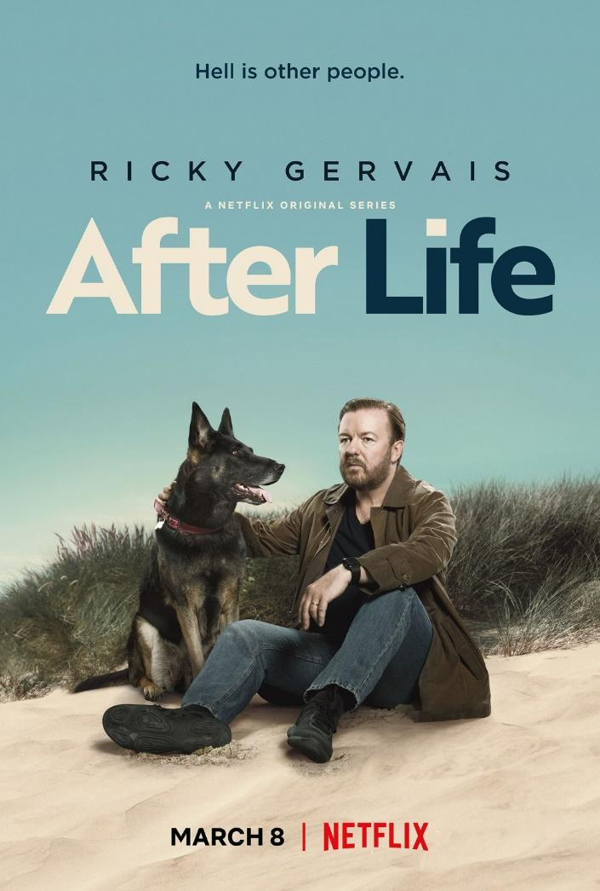

<section class="article-netflix py-5">
  <div class="container">
    <div class="row justify-content-center">
      <article class="col-sm-8">
        <h2>After Life</h2>
        <h5>Passez du rire aux larmes malgré les thématiques sombres abordées, 15 janvier 2021</h5>

        <div class="article_img">
          
        </div>

        <p>
         Une de mes séries préférées sur Netflix. Signée Ricky Gervais, acteur et humouriste britannique, dont il est également le personnage principal.
        </p>

        <p>
          La série traite avec finesse de sujets graves de la vie (mort, suicide, drogue, dépression…) avec un humour cynique dont je ne me lasse pas, je suis très fan. On passe du rire aux larmes d’une scène à l’autre, beaucoup d’émotions. Les personnages sont à la fois drôles et vraiment touchants.
        </p>

        <p>
          Il y a pour l’instant 2 saisons de 6 épisodes chacune, pas assez à mon goût, ça passe trop vite. J’attends la saison 3, annoncée comme la dernière, qui devrait arriver prochainement.
        </p>

         <iframe width="560" height="315" src="https://www.youtube.com/embed/v1GxPujWses" title="YouTube video player" frameborder="0" allow="accelerometer; autoplay; clipboard-write; encrypted-media; gyroscope; picture-in-picture" allowfullscreen></iframe>
         <br>

        <p class="signature text-end"><strong>Zira</strong></p>
      </article>

    </div>

  </div>

</section>


